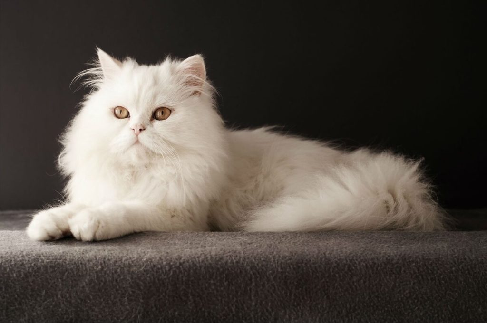

В 19 веке персидские кошки были любимцами европейской знати. Это царственные и очень горделивые животные с чувством собственного достоинства. Поведение персов принципиально отличается от поведения других кошек. Они не кричат и вообще крайне редко подают голос. Если персу что-то нужно от хозяина, он будет сидеть рядом и преданно смотреть ему в глаза, ожидая ответной реакции. С этим могут иногда возникать трудности, так как не все хозяева быстро понимают, что от них что-то требуется. Но, даже если и понимают, далее им предстоит решить загадку: что именно нравится или не нравится кошке. Хотя постепенно это становится делать все легче. Вообще, кажется, что эта порода была создана для неги и наслаждений: кошки не носятся ураганом по дому, не охотятся и с удовольствием проводят время, валяясь в каком-нибудь теплом приятном месте вместе с хозяином.
Благодаря своему сдержанному характеру, персы создают в доме атмосферу уюта и спокойствия. Они никуда не торопятся, никогда не позволяют себе настойчиво требовать внимания от хозяина (хотя совсем не против, чтобы их гладили, чесали и всячески баловали). Это идеальная кошка для тех, кто не любит назойливость и чрезмерную активность подвижных пород. При всей своей вальяжности персы отлично усваивают базовые команды и всячески стараются угодить своему хозяину. Они были выведены исключительно как домашняя порода и считают своим главным предназначением радовать человека. Персы легко уживаются с другими животными и детьми. Очень терпеливо относятся к проявлению интереса к своей персоне. Агрессию позволяют себе проявлять только в крайних случаях.